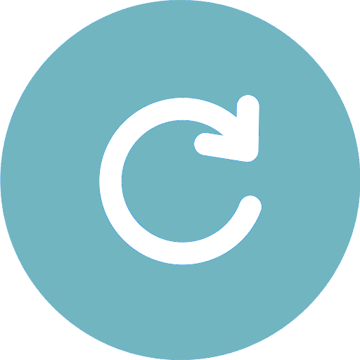
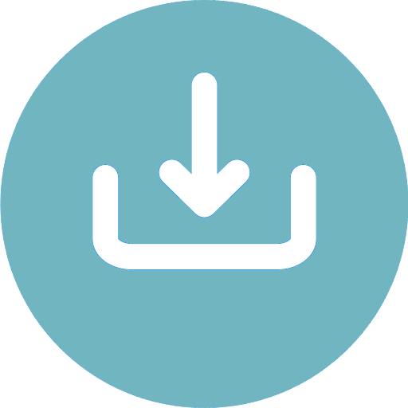

WebRTC Streamer
On air
{{ streamError.type }}
{{ streamError.name }}
{{ streamError.detail }}
{{ f.label }}{{ f.value }}
Connector
Stream name
Access token
Microphone
Camera
Resolution
Target bitrate

